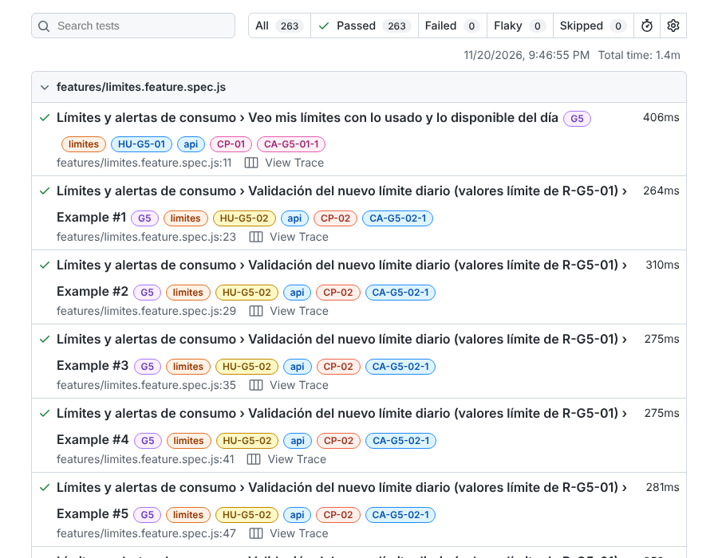
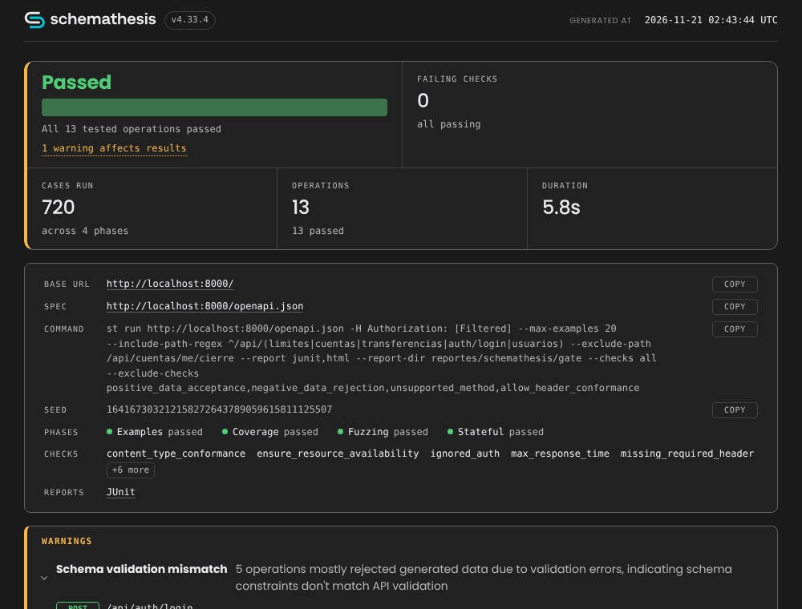
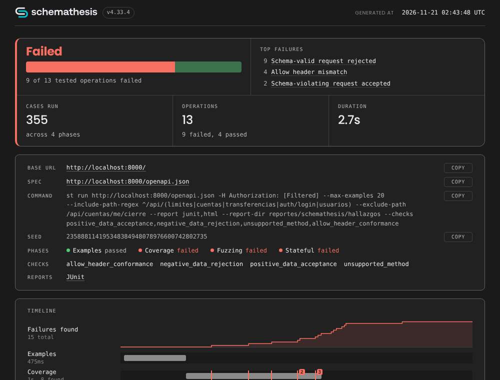
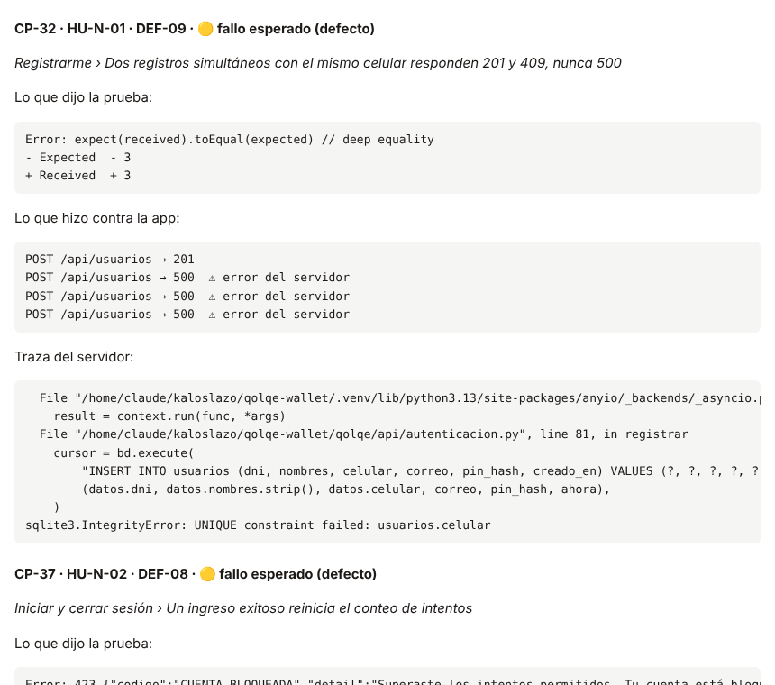
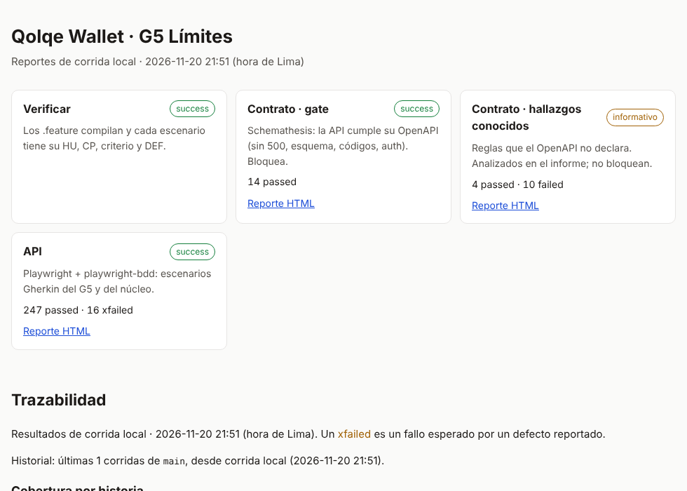
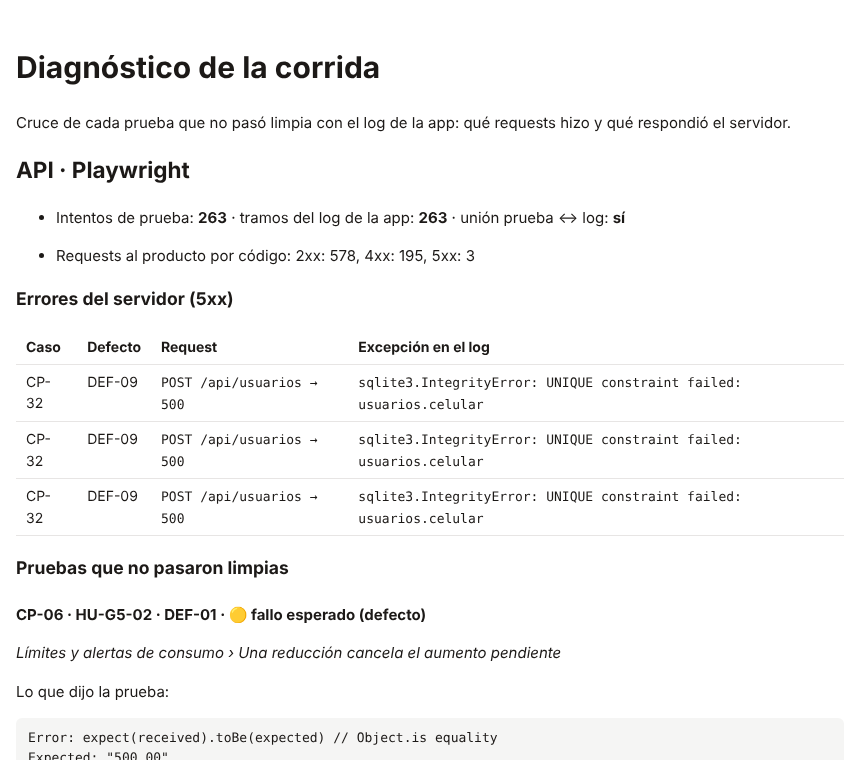
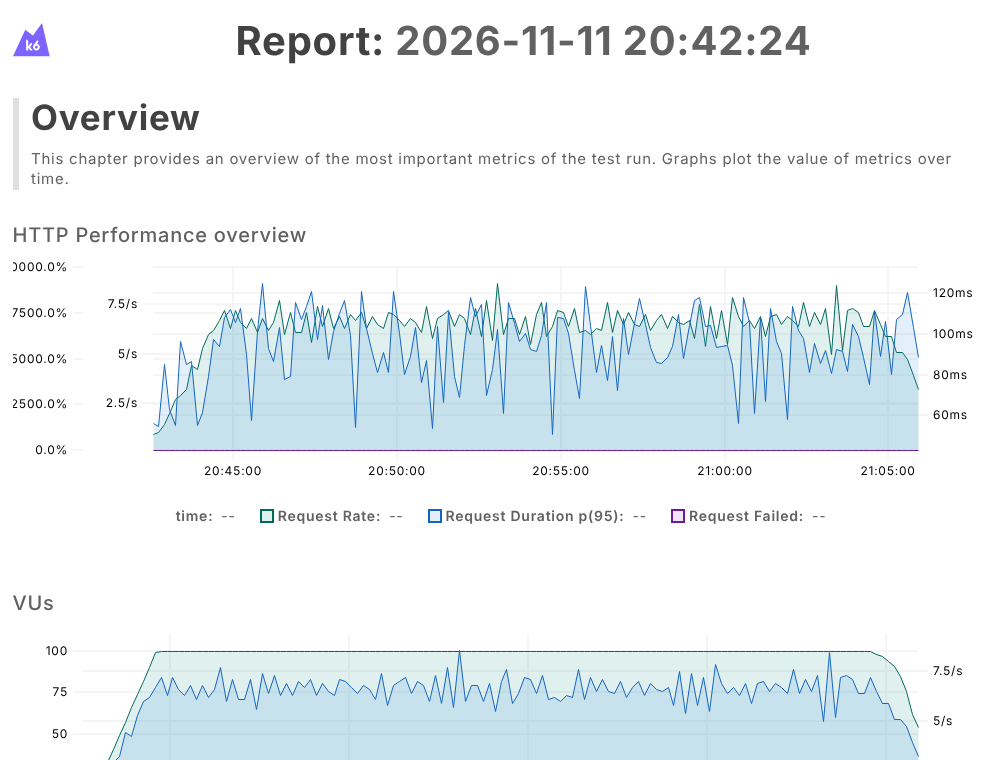
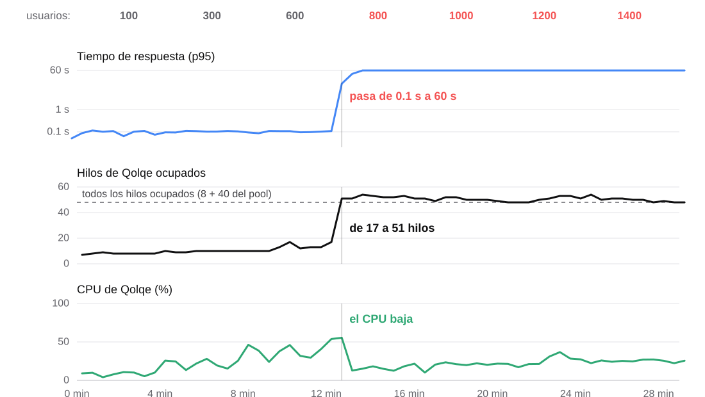
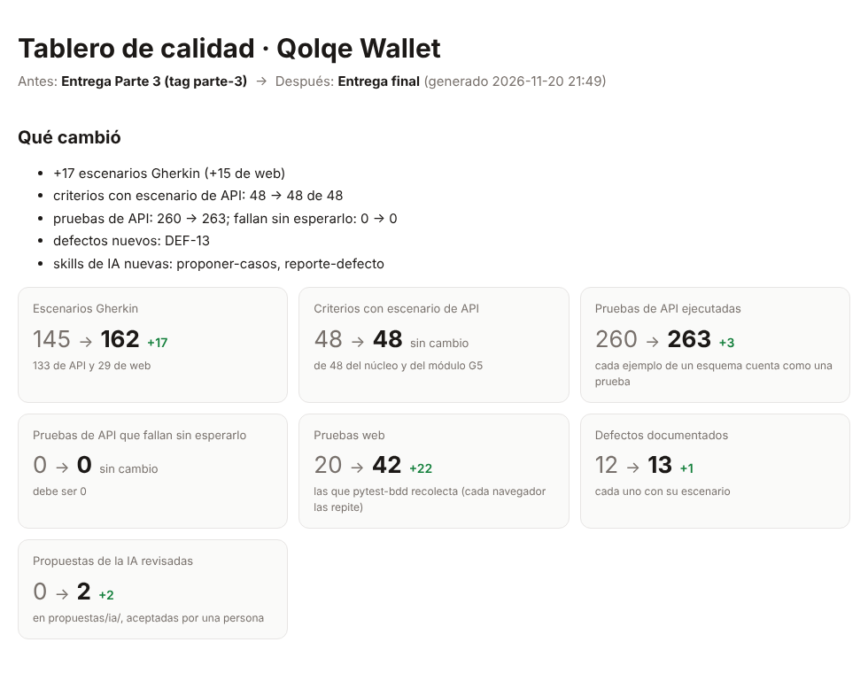

CS5383 · Proyecto 2 · Presentación final
API, contrato, web, pipeline, reportería y rendimiento. De cada herramienta: cómo la evaluamos, cómo funciona, cómo la implementamos y qué reporte deja.
Playwright + playwright-bdd
Schemathesis
Selenium + pytest-bdd
GitHub Actions · Pages · Qase
del fallo a la causa
k6
Cómo evaluamos · cómo funciona · implementación · reportería. Después: trazabilidad, defectos, IA, el antes y después, y la demo.
| Área | Herramienta | Pregunta que responde |
|---|---|---|
| API | Playwright + playwright-bdd | ¿Se cumple cada regla de negocio de cada historia? |
| Contrato | Schemathesis | ¿La API cumple su OpenAPI con cualquier entrada? |
| Web | Selenium + pytest-bdd | ¿El usuario puede hacerlo en pantalla, en Chrome y Firefox? |
| Rendimiento | k6 | ¿Responde a tiempo con 100 y 300 usuarios y dónde se rompe? |
| Pipeline y reportes | GitHub Actions · Pages · Qase | ¿Se corrió todo, en cada cambio, y qué pasó? |
.feature es el caso de negocio; cada paso, una función TypeScript que llama a la APIbddgen convierte el Gherkin en specs de Playwrightfeatures/*.feature y tests/api/: 133 escenarios, 263 pruebas@tecnico: 401, 422, tipos, métodos@DEF-xx @fail detectan los defectosEVIDENCIA=contests/api/resultados/Un @fail es un defecto conocido (@DEF-09): la prueba falla a propósito y, si algún día pasa, el job se pone en rojo.

/openapi.json y genera 20 ejemplos por operaciónscripts/contrato.sh, dos pasadas: gate (bloquea) y hallazgos conocidos (se reportan)verificar y apicurl que reproduce cada hallazgocobertura_contrato.py: qué códigos provocó cada suite por operación
Gate: 0 checks fallidos, 13 de 13 operaciones, 720 casos en 4 fases. Bloquea.

Hallazgos conocidos: reglas que el OpenAPI no declara y la cabecera Allow. Se reportan, no bloquean.
.feature, obligatorio)sleep; localizadores data-testid.feature en features/ui/: límites, dos usuarios, núcleo común y defectos--evidencia con | fallos | sin| Opción | Un cambio, un lugar | Pasos de negocio | Varios usuarios | Escalabilidad | Decisión |
|---|---|---|---|---|---|
| Script lineal | no | no | no | no: cada escenario copia localizadores | descartado |
| Page Object | sí | sí | no | sí: pantalla nueva = clase nueva | pantallas |
| Screenplay | sí | sí, más | sí | sí en usuarios; en uno solo, clases de más | flujos entre usuarios |
| Page Factory | sí | sí | — | — | no existe en Python |
Lo que no escala: los escenarios comparten BD y reloj, así que no corren en paralelo.
trazabilidad y Gherkin que compila
gate de Schemathesis
escenarios de negocio, 263 pruebas
Selenium + pytest-bdd
Selenium + pytest-bdd
Pages, diagnóstico, tablero y Qase
Prueban la misma API desde ángulos distintos y no dependen entre sí: corren a la vez y la etapa dura lo que el más largo.
Selenium prepara datos y sesión por la API: con la API rota, un fallo web no dice nada. Es lo más lento, así que va después.
Se publican aunque algo falle, que es cuando más hacen falta.
| Gate | Qué mide | Umbral | Valor de referencia | Bloquea |
|---|---|---|---|---|
| Trazabilidad | escenarios sin HU, CP o criterio; criterios sin caso | 0 faltantes | 162 escenarios · 48 de 48 criterios | sí |
| Gherkin compila | pasos sin implementar; escenarios que no se recolectan | 0 | 133 casos de API · 42 pruebas web | sí |
| Contrato | fallos de checks de Schemathesis en 4 fases | 0 fallos | 13 de 13 operaciones · 720 casos | sí |
| Hallazgos conocidos | reglas de negocio que el OpenAPI no declara | se reportan | 15 hallazgos (varía con la semilla) | no |
| Funcional API | pruebas que fallan, flaky o con test.only | 0 · 0 · 0 | 263 de 263 (16 son defectos esperados) | sí |
| Funcional web | lo mismo, en Chrome y Firefox | 0 failed | 37 pasan + 5 defectos esperados | sí |
| Rendimiento | p95, fallas, sesiones/min, dinero cuadrado | < 800 ms · < 1500 ms · < 1 % | 51 ms · 126 ms · 0 % | antes de la campaña |
En un gate de calidad la regla es «cero fallos»; lo que informa es el valor de referencia: cuánto se revisó. Solo rendimiento tiene umbrales numéricos, y los fija el requerimiento.
| Si falla… | Se abre | Ahí se ve |
|---|---|---|
| verificar | La salida del job | Archivo, línea y escenario, con la regla rota |
| contrato | HTML del gate | El check que falló y el curl que lo reproduce |
| api | diagnostico.html | La prueba, lo que esperaba, los requests con su código y la traza del servidor si hubo un 500 |
| web (solo corre si la etapa 1 pasó) | reporte-bdd.html | El paso en rojo, su captura, el error, la traza y la consola del navegador |
| un defecto «pasa» | El job | «Se esperaba que fallara y pasó»: se corrigió; hay que retirar la etiqueta |
Todo se publica al terminar el último job en GitHub Pages y se resume en la página de la corrida. Con evidencia con, cada paso lleva captura o traza.
| Log | Lo produce | ¿Lo mapeamos? | Para qué, o por qué no |
|---|---|---|---|
| Accesos y trazas de la app durante la API | herramienta (uvicorn) | sí · log-api.txt | Diagnóstico por prueba y cobertura frente a Schemathesis |
Hallazgos de Schemathesis (JUnit, curl) | herramienta | sí | Se cruzan con la operación del OpenAPI y con nuestros escenarios |
| Reporte BDD, capturas y consola BiDi | nosotros | sí | Camino al fallo en la web |
| CPU, memoria, hilos y log de Qolqe bajo carga | nosotros | sí | Causa del colapso: 3878 «database is locked» |
| Traza de Playwright, cassette de Schemathesis | herramienta | no | Detalle para una persona; el diagnóstico ya resume los requests |
| Red del navegador, log de los drivers | herramienta | no | Ruido de estáticos; el driver solo importa si falla él mismo |
Se mapea un log cuando se puede unir con algo que identificamos, esa unión se puede validar y responde algo que el reporte por defecto no. Lo demás queda como artefacto u opción.

Esperaba un 201 y tres 409; la comparación no coincidió.
Un 201 y tres 500 en POST /api/usuarios.
sqlite3.IntegrityError: UNIQUE constraint failed: usuarios.celular
Cada escenario empieza reiniciando los datos: el tramo N del log es el intento N. La unión solo se acepta si los conteos coinciden (263 = 263) y se comprobó con DEF-09 y DEF-11.

Portada de Pages: estado de cada job y matriz por historia.
Playwright: 263 passed, con etiquetas y traza.

Diagnóstico: 5xx con su excepción.

k6: tablero de la prueba de carga.
Selenium deja su propio reporte BDD (reporte-bdd.html), con captura de cada paso, que se muestra en la demo.
correr.sh levanta limpio, mide, corre y revisa el dinerotests/performance/integridad.txtresultados/<prueba>/| Métrica | Qué evalúa | Cómo se calcula | Umbral | Por qué |
|---|---|---|---|---|
| p95 del tiempo de respuesta | Qué tan rápido responde a casi todos los usuarios | El tiempo bajo el cual responde el 95 % de las peticiones | consultas y login < 800 ms · dinero < 1500 ms | Lo fija el requerimiento; el p95 no se distorsiona por un valor extremo |
| Tasa de fallas | Estabilidad: que no haya errores ni timeouts | Peticiones fallidas ÷ total | < 1 % | Lo fija el requerimiento |
| Sesiones por minuto | Que atienda la demanda de la hora punta | Sesiones completas en un minuto de régimen | ≥ 50 por minuto | 3000 operaciones por hora entre 60 |
| Integridad del dinero | Corrección bajo concurrencia | Saldos contra movimientos y operaciones en la BD contra las 201 de k6 | cuadra exacto | Un sistema rápido que descuadra el dinero no sirve |
| CPU, memoria e hilos | Por qué responde así (cola o saturación) | Muestras cada segundo, de Qolqe y de k6 | sin umbral | Explican las otras métricas; no deciden |
| Parámetro | Valor | Cálculo o fuente |
|---|---|---|
| Hora punta | 100 usuarios | Ley de Little: (3000 / 3600 s) × 120 s |
| Campaña | 300 usuarios | 3 × la hora punta (requerimiento) |
| Think time | 10 a 25 s, promedio 18 s | Dato del requerimiento; triangular 10-19-25 para no sincronizar usuarios |
| Ramp-up hora punta | 120 s | Una sesión dura 120 s: antes no hay régimen |
| Ramp-up campaña | 300 s | «La mayoría inicia sesión en los primeros 5 minutos» |
| Ramp-up estrés | 60 s por escalón, 180 s sostenidos | Evita el golpe de entrada; 180 s son más de una sesión |
Con esa pausa, 100 usuarios hacen unas 6.7 peticiones por segundo en régimen. Con una pausa de 5 s serían unas 22: más de tres veces la hora punta real.
| Prueba | Métrica | Umbral | Resultado | Margen |
|---|---|---|---|---|
| Carga · 100 | p95 consultas | < 800 ms | 51 ms | 15.7 veces mejor |
| Carga · 100 | p95 dinero | < 1500 ms | 126 ms | 11.9 veces mejor |
| Carga · 100 | sesiones/min · errores | ≥ 50 · < 1 % | 55.4 · 0 % | 11 % más |
| Pico · 300 | p95 consultas · dinero | < 1600 · 3000 ms (supuesto) | 48 · 127 ms | 33 y 23.6 veces |
| Resistencia · 60 min | p95 consultas · dinero | < 800 · 1500 ms | 39–45 · 122–129 ms | sin deriva |
| Estrés · 600 | p95 | < 800 ms | 95 ms | cumple |
| Estrés · 800 | p95 | < 800 ms | 60 s | no cumple · DEF-10 |
Creíble porque no hay cola (CPU 8 %), el p95 es estable en las ventanas de la prueba y se revisó el dinero de cada operación. El límite está entre 600 y 800 usuarios.

El p95 pasa de 0.1 s a 60 s y los hilos de 17 a 51: todos ocupados.
Un candado de SQLite y 40 hilos: 3878 «database is locked» en el log. El CPU baja.
Capacidad estimada de 600 usuarios: el doble de la campaña. Es DEF-10.
@HU, @CP y @CAmain, con qasectlpassed 28 · failed 2 · último fallo run #45: desde cuándo falla y qué es inestableDEF-02 límite sin interbancarias · DEF-04 saldo negativo · DEF-06 cuenta cerrada · DEF-11 concurrencia
DEF-01 · DEF-07 token tras cerrar sesión · DEF-10 colapso con 800 usuarios
DEF-03 · DEF-05 · DEF-08 · DEF-09 · DEF-12 · DEF-13 redondeo de la comisión
Escenario @DEF-xx en API y web; DEF-10, la prueba de estrés de k6.
Estado de la calidad: cumple en rendimiento, pero no es confiable con el dinero. Recomendamos no salir a producción antes de corregir los críticos.
Escenarios Gherkin con técnica, esperado citado del requisito y preguntas sobre lo que el requisito no dice.
→ propuestas/ia/
Redacta un DEF-NN con el formato del repo, reproduciéndolo antes contra la app.
→ borrador en propuestas/ia/
Arma el tablero con mapeado, testing y defectos, y compara con la entrega anterior (antes y después).
→ reportes/tablero/
features/ sin una persona que decidarequisitos.mdbddgen y verificar_etiquetas.pyLos criterios con escenario de API no cambian: 48 de 48 antes y después. La cobertura ya estaba completa; el aporte está en la web, la reportería y el pipeline.

| Entrega | Observación | Qué hicimos |
|---|---|---|
| Parte 1 | Lista de escenarios de Schemathesis, casos técnicos, justificar herramientas | Hallazgos leídos uno a uno, @tecnico por HU y tabla «qué responde y qué no ve cada herramienta» |
| Parte 2 | Cobertura completa, contrato temprano, gates claros, evidencia, trazabilidad entre corridas, justificar el patrón | 48 de 48 criterios; contrato en la etapa 1; gates con métrica y umbral; evidencia con | fallos | sin; historial y Qase; patrón en 6 criterios |
| Parte 3 | Modelo de carga, think time, ramp-up y resultados sin justificar | Ley de Little, tabla de parámetros, qué mide cada métrica y márgenes frente a cada umbral |
| Final | IA validada; reportería a detalle; todo consolidado | Tres skills con checklist; diagnóstico por prueba y mapa de logs; tablero antes y después; un informe y un pipeline |
Límites: BD y reloj compartidos, capacidad medida en una laptop, Qase guarda 30 días.
pestaña Actions
verificar_etiquetas.py
demo.sh suite @CP-32
npm run diagnostico
npm run contrato
reporte-bdd.html
reporte.html · quiebre
kaloslazo.github.io
/proponer-casos
npm run tablero
Lo que tarda (Selenium, k6, el pipeline) se deja corrido y se abre ya hecho. Plan B: el sitio de Pages tiene todos los reportes de la última corrida. Guion completo en docs/demo.md.
Qolqe rinde bien bajo carga; lo que hay que arreglar antes de producción es el dinero.